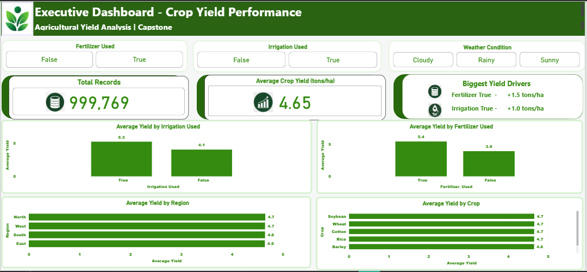
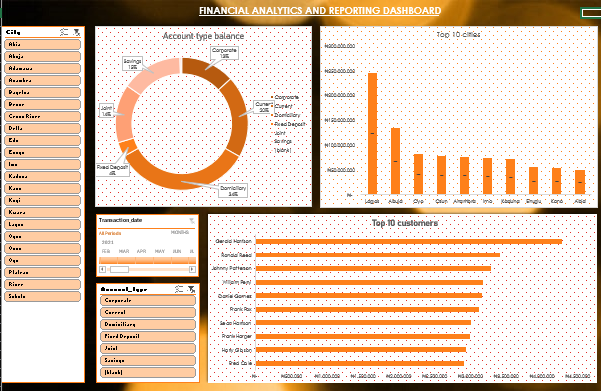

Agricultural Crop Yield Analysis
An agricultural data analytics project exploring factors associated with crop yield across different regions, crop types and environmental conditions. Using Excel and Power BI, the project analyses agricultural data to identify patterns, uncover insights and support data-driven decision-making in agriculture.
View on GitHub
Electricity Consumption and Tariff Analysis
An Excel-based data analytics project evaluating household and commercial electricity usage, billing accuracy, and tariff distributions across multiple states. Using relational lookups (XLOOKUP/VLOOKUP), conditional formatting, and data validation, this project audits unit-rate calculations and isolates high-cost tariff segments to uncover consumption patterns and support transparent utility pricing.
View on GitHubSQL Superstore Customer Behavior Analysis
A SQL Server data analytics project exploring customer segmentation, regional reach, and purchasing frequency using the Superstore dataset. Utilizing T-SQL window functions, CTEs, and multi-table joins, the analysis evaluates customer retention rates, high-value spending patterns, and seasonal sales trends. These insights uncover discount impacts on profit margins to guide data-driven retail strategy.
View on GitHubSQL Ecommerce Database Schema
A foundational SQL Server relational database project establishing a fully structured e-commerce schema. It models core retail entities by defining tables for customers, products, orders, and order details. The script incorporates primary keys, foreign key constraints, and column alterations using SP_RENAME. Initial data insertion scripts are also included to verify relational mappings and data integrity. Ultimately, the project provides a reliable architectural foundation for transactional tracking and retail analytics.
View on GitHub
kgoldpianz/Bank Customer Analytics Dashboard
A banking analytics project exploring customer demographics, account balances, and churn behaviors. Using Power BI and SQL, the dashboard visualizes key financial metrics and transaction trends. It tracks customer acquisition rates and service adoption across various branches. Ultimately, the analysis identifies high-risk churn segments to help financial institutions improve retention strategies.
View on GitHubEmployee Data Analysis
An employee data analysis project involving 200 employee records across different departments. It explores salary distribution, employee demographics, performance ratings, bonus and promotion eligibility, and tax categories to generate useful workforce insights.
View on GitHubSQL Student Database Management
A relational SQL database project designed to organize and manage academic records across students, courses, departments, and enrollments. Utilizing primary and foreign key constraints, the schema enforces data integrity while supporting efficient querying of grades, attendance, and faculty assignments. Ultimately, the system streamlines administrative reporting and provides a scalable foundation for institutional academic analytics.
View on GitHub